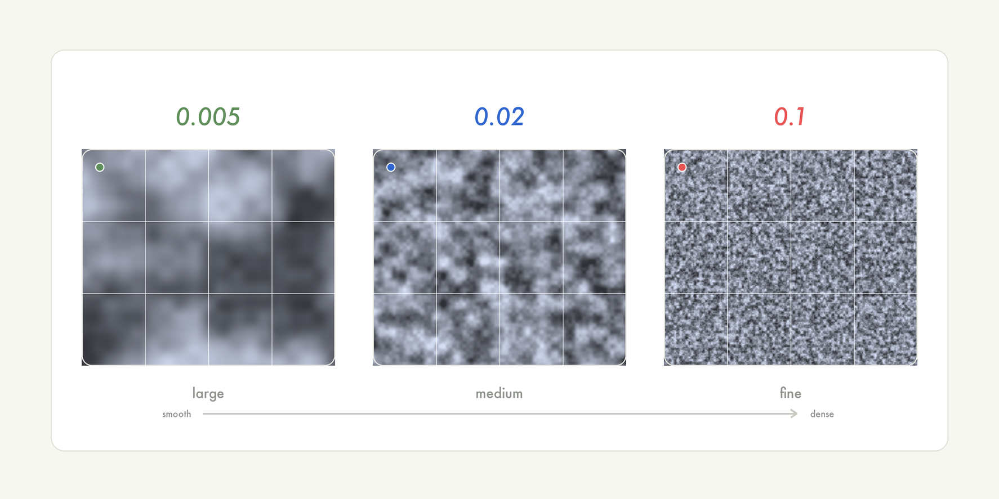
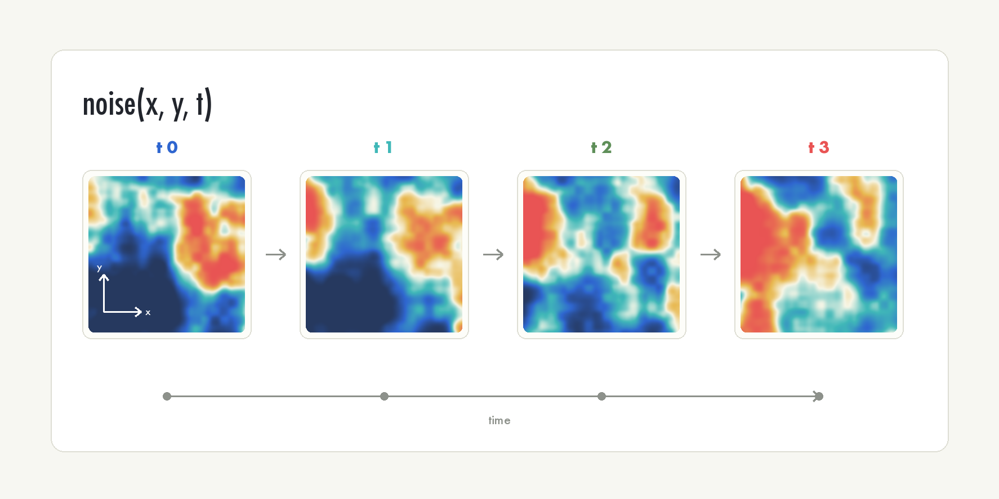
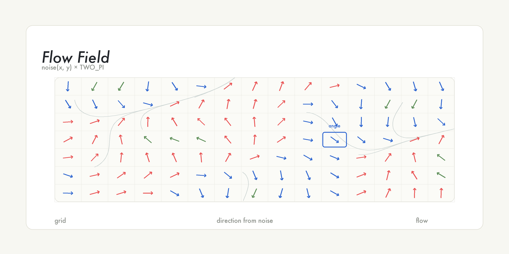
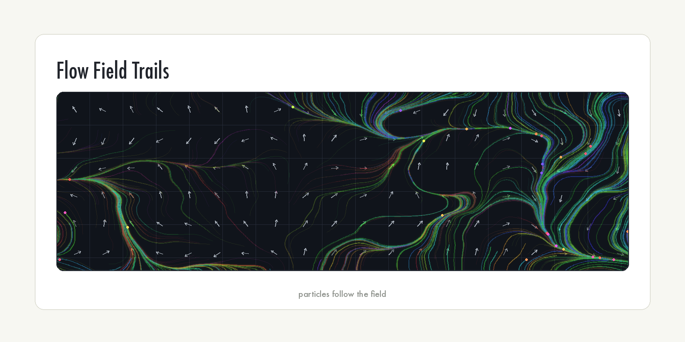

12주차: 노이즈와 자연스러운 움직임 (2교시 · 학생용)
| 항목 | 링크 |
|---|---|
| 강의 아웃라인 | week-12-outline |
| 강사용 교안 | week-12-period2-content |
| 이전 교시 학생용 | week-12-period1-student |
| 다음 교시 학생용 | week-12-period3-student |
이번 시간이 끝나면 다음을 할 수 있습니다. - 2D 노이즈
noise(x, y)로 텍스처를 생성할 수 있습니다. - 세 번째 인자로
움직이는 2D 노이즈를 만들 수 있습니다. - Flow Field 개념을 이해하고
방향장을 시각화할 수 있습니다.
공간의 노이즈: 2D 텍스처와 Flow Field
1교시 복습
noise()가 돌려주는 값의 범위는? → 0 이상 1 이하- 증가값(
step)을 크게 하면? → 변화가 거칠어지고, 너무 크면random()과 구별하기 어려움 - 원의 x와 y를 각각 노이즈로 움직이려면? → 오프셋을 서로 다른
값에서 출발 (예:
xOff = 0,yOff = 1000)
1교시에서 만든 것은 떠다니는 점, 그리고 옆에서 본 풍경
능선이었습니다. 풍경은 화면을 가득 채워 2D처럼 보였지만,
noise()에 넣은 입력은 x
하나뿐이었습니다. 모두 1D
노이즈였습니다.
2교시에 다루는 코드는 noise(x, y)와
noise(x, y, t)로, 입력이 둘 이상입니다.
1교시가 한 줄짜리 산맥 능선이었다면, 2교시는 위에서 내려다본
값의 지도 전체를 다룹니다.
심화 개념 1: 2D 노이즈 noise(x, y) — 위에서 내려다본 값의 지도
1교시 noise(t)는 입력이 하나, 시간 축 하나였습니다.
거기에 입력을 하나 더 붙이면 noise(x, y) — 2D 노이즈가
됩니다.
| 차원 | 함수 | 비유 | 결과 |
|---|---|---|---|
| 1D | noise(t) 또는 noise(x) |
산맥 위를 한 줄로 걷기 | 그래프·능선 (선) |
| 2D | noise(x, y) |
하늘에서 땅을 내려다보기 | 텍스처·지도 (면) |

noise(x, y)는 좌표 (x, y)마다 0~1 값을
돌려줍니다. 1D에서 ’가까운 입력끼리 비슷한 값’이었던 성질이 그대로
2차원으로 퍼진 것입니다. 가까운 좌표끼리 비슷한 값이 나오므로 부드러운
얼룩무늬가 됩니다.
2D 노이즈의 가장 직관적인 활용은, 캔버스의 모든
픽셀에 noise(x, y)를 물어보고 그 값을 밝기로
칠하는 것입니다.
function setup() {
createCanvas(200, 200);
pixelDensity(1); // 픽셀 좌표와 화면 픽셀을 1:1로 맞춤
noLoop(); // 한 번만 그림
let scl = 0.02;
for (let y = 0; y < height; y++) {
for (let x = 0; x < width; x++) {
let bright = noise(x * scl, y * scl) * 255;
stroke(bright);
point(x, y);
}
}
}실행하면 흑백의 구름 같은 얼룩무늬가 캔버스를 채웁니다. 이중
for문으로 모든 좌표를 방문하고, 각 좌표에서 noise()
값(0~1)에 255를 곱해 밝기로 쓴 것입니다. Ken Perlin이 영화 <트론>에서
만들고자 했던 자연스러운 질감이 바로 이런 모습입니다.
코드의 scl(noiseScale)이 핵심입니다. 1교시의 증가값처럼
노이즈 입력 간격을 조절하는 값입니다. 픽셀 좌표는 0, 1, 2, 3처럼 1씩
늘어나는데, 스케일 조정 없이 noise(x, y)를 그대로 쓰면 옆
픽셀끼리 값이 너무 달라 구름보다 거친 잡음에 가까워집니다. 좌표에 작은
수(scl)를 곱해 간격을 좁히면 옆 픽셀끼리 비슷해져 부드러운
무늬가 됩니다.

scl 값을 작게 두면 큰 덩어리, 크게 두면 잘게 쪼개진
질감이 됩니다.
2D 노이즈 무늬는 그 자체로 ’지형’이나 ’구름’이 아닙니다. 0~1 값이 좌표마다 깔린 지도일 뿐입니다. 그 값을 밝기로 칠하면 구름, 높이로 쓰면 지형, 투명도로 쓰면 안개가 됩니다. 위에서 내려다본 값의 지도이며, 무엇으로 해석할지는 자유입니다.
넓은 대륙과 넓은 바다가 있는 지도를 만들려면
noiseScale을 크게 할까요, 작게 할까요?
답: 작게 합니다. 스케일이 작아야 큰 덩어리(넓은 땅·넓은 바다)가 생깁니다.
심화 개념 2: 움직이는 2D 노이즈 — 세 번째 인자
앞에서 만든 구름은 noLoop()으로 한 번만 그린
정지 화면입니다. 흘러가게 하려면 noise()의
세 번째 입력을 씁니다. noise()는 입력을 세 개까지 받을 수
있습니다.
noise(t)— 1D, 시간 축 하나noise(x, y)— 2D, 공간noise(x, y, t)— 2D + 시간, 흐르는 공간
function setup() {
createCanvas(200, 200);
pixelDensity(1);
}
function draw() {
let scl = 0.02;
noStroke();
for (let y = 0; y < height; y += 2) {
for (let x = 0; x < width; x += 2) {
let bright = noise(x * scl, y * scl, frameCount * 0.01) * 255;
fill(bright);
rect(x, y, 2, 2); // 2px씩 건너뛰므로 점 대신 2x2 사각형으로 빈틈 없이 채움
}
}
}
세 번째 입력은 시간 축입니다. frameCount * 0.01로 조금씩
이동시키면 2D 노이즈 무늬가 부드럽게 바뀝니다.
x += 2, y += 2로 픽셀을 둘씩 건너뛰면
200×200 캔버스에서 계산 횟수가 4만 번 → 1만 번으로 줄어 속도가
약 4배 빨라집니다. 시각적으로는 큰 차이가 없습니다. 캔버스가
크면 x += 3, += 4로 더 건너뛸 수 있습니다.
화질과 속도 사이의 균형을 조절하는 방식입니다.
noise(x, y, frameCount * 0.01)에서 0.01을
0.05로 바꾸면 구름이 어떻게 될까요?
답: 더 빨리 흘러갑니다. 시간 축을 더 큰 걸음으로 이동하기 때문입니다.
심화 개념 3: Flow Field — 보이지 않는 바람의 길
Flow Field(플로우 필드)는 노이즈의 대표적인 활용 중 하나입니다.
화면을 바둑판처럼 격자로 나누고, 각 칸에
방향(각도)을 하나씩 정해 줍니다. 그 방향을
noise(x, y)로 정하면 가까운 칸끼리 비슷한 값 → 가까운
칸끼리 비슷한 방향이 되어, 전체적으로 자연스럽게 흐르는 방향의
지도가 생깁니다.
바람을 떠올려 봅니다. 내 칸의 바람과 바로 옆 칸의 바람이 정반대라면 어색합니다. 노이즈로 정하면 옆 칸끼리 부드럽게 이어지는 바람의 길이 됩니다.
노이즈 값은 0~1입니다. 여기에 TWO_PI(한 바퀴, 360도)를
곱하면, noise(x, y) * TWO_PI는 0도에서 360도 사이의 각도가
노이즈로 부드럽게 정해집니다.
function setup() {
createCanvas(400, 400);
background(255);
stroke(0);
let grid = 20; // 격자 한 칸 크기
let scl = 0.05; // 노이즈 스케일
for (let x = 0; x < width; x += grid) {
for (let y = 0; y < height; y += grid) {
let angle = noise(x * scl, y * scl) * TWO_PI;
push();
translate(x + grid / 2, y + grid / 2);
rotate(angle);
line(0, 0, grid * 0.5, 0); // 방향 막대
line(grid * 0.5, 0, grid * 0.35, -3); // 화살촉
line(grid * 0.5, 0, grid * 0.35, 3);
pop();
}
}
}
각 칸 중앙으로 좌표계를 옮기고(translate), 노이즈로 정한
각도만큼 돌린 뒤(rotate), 화살표를 그립니다.
점 하나를 이 화살표 방향대로 움직이면 보이지 않는 바람에 실려 떠다니는 것처럼 보입니다. 점에 수명까지 붙이는 본격적인 파티클 시스템은 13주차에서 다룹니다.
Flow Field에서 옆 칸끼리 방향이 비슷한 이유는 무엇일까요?
답: 방향을 noise()로 정했기 때문입니다.
노이즈는 가까운 입력끼리 비슷한 값을 돌려줍니다.
실전 사례
배운 내용을 합친 응용 예제 두 가지입니다.
사례 1: 2D 노이즈 컬러 텍스처
흑백 구름을 컬러로 바꾸면 색상 변화가 더 풍부해집니다. 노이즈 값을 밝기 대신 색상(hue)에 연결하는 것입니다.
function setup() {
createCanvas(300, 300);
pixelDensity(1);
colorMode(HSB, 360, 100, 100);
}
function draw() {
let scl = 0.01;
for (let y = 0; y < height; y += 2) {
for (let x = 0; x < width; x += 2) {
let n = noise(x * scl, y * scl, frameCount * 0.005);
let hue = map(n, 0, 1, 0, 360);
noStroke();
fill(hue, 70, 90);
rect(x, y, 2, 2);
}
}
}무지개 빛깔이 부드럽게 섞이며 천천히 흐릅니다. HSB 모드에서 노이즈
값을 hue로 매핑했습니다. map(n, 0, 1, 0, 360)은 노이즈
0~1을 색상 0~360도로 번역합니다. 1교시의 noise() +
map() 공식이 여기서도 그대로 쓰입니다. 가까운 픽셀끼리 색이
비슷해 무지개가 부드럽게 흐릅니다.
사례 2: Flow Field + 점 궤적
Flow Field 위로 점들이 흘러다니며 궤적을 남기는 작품입니다. 여기의 점들은 아직 13주차의 Particle 클래스가 아니라, 위치만 가진 벡터 배열입니다.
let points = [];
let scl = 0.01;
function setup() {
createCanvas(400, 400);
background(0);
for (let i = 0; i < 200; i++) {
points.push(createVector(random(width), random(height)));
}
}
function draw() {
background(0, 8); // 아주 옅게 덮어 잔상을 남김
for (let p of points) {
let angle = noise(p.x * scl, p.y * scl) * TWO_PI * 2;
let prevX = p.x;
let prevY = p.y;
p.x += cos(angle) * 1.5;
p.y += sin(angle) * 1.5;
stroke(255, 40);
line(prevX, prevY, p.x, p.y);
if (p.x < 0 || p.x > width || p.y < 0 || p.y > height) {
p.set(random(width), random(height));
}
}
}
핵심 아이디어는 하나입니다 — 노이즈로 방향을 정하고 그 방향으로 움직이면 자연스러운 흐름이 된다.
노이즈로 방향을 정해 점을 흐르게 하는 기법은 제너러티브 아트에서 널리
쓰입니다. 아티스트 Tyler Hobbs의 Flow Field 기반 작품(Fidenza 시리즈)이
대표적입니다. 모두 코드로, noise() 하나에서 출발해
만들어집니다.
3교시 실습 안내
noise(x, y)는 화면 전체에 깔린 값의 지도입니다.- 세 번째 입력을 더하면 그 지도가 흐릅니다.
- 그 값으로 방향을 정하면 Flow Field가 됩니다.
3교시에는 한 작품을 단계별로 직접 만듭니다 — 노이즈 워커 작품입니다. 1교시에서 만든 떠다니는 원 하나에서 출발해, 여러 개의 워커로 늘리고, 색과 잔상으로 질감을 입히고, 마우스 인터랙션까지 4단계로 한 겹씩 쌓아 올립니다.
3교시에 만든 작품을 13주차 수업 전까지 발전시켜 제출하면 실습과제 4가 완료됩니다.

| 항목 | 내용 |
|---|---|
| 과제명 | 데이터 시각화 또는 노이즈 활용 작품 |
| 제출 기한 | 13주차 수업 전까지 |
| 제출 방식 | P5.js Web Editor 링크 공유 |
| 필수 요구사항 | noise() 활용 + 유기적 움직임/패턴 + 인터랙션 1개
이상 |
| 평가 | 제출 완료 시 만점 — 완성도보다 시도와 제출이 중요 |
제출 방향은 둘 중 하나를 고릅니다. 하나, 노이즈 활용 작품 — 3교시 결과물을 그대로 발전시키는 방향으로, 대부분의 학생에게 권장합니다. 둘, 데이터 시각화 작품 — 11주차 JSON·CSV 데이터에 노이즈 효과를 더하고 싶다면 이 방향으로 제출할 수 있습니다.
시작이 막막하면 1교시 떠다니는 원 코드를 그대로 복사해 시작합니다. 그것이 3교시 1단계의 출발점입니다.